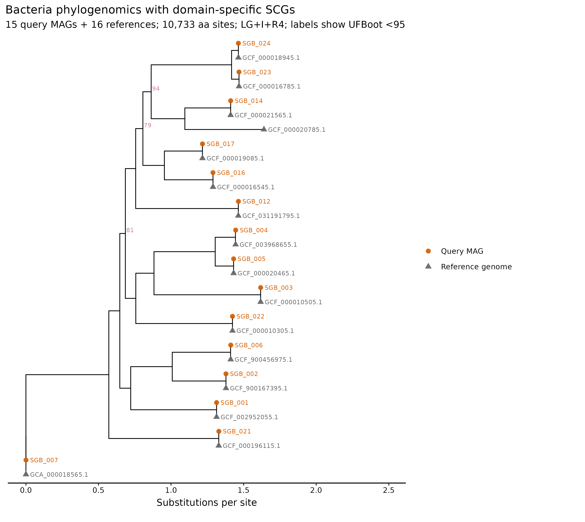
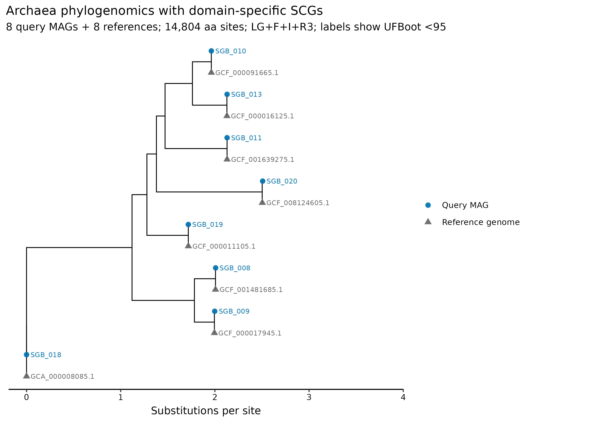
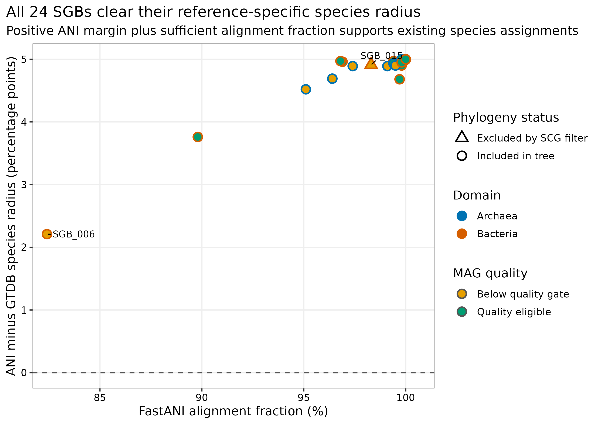
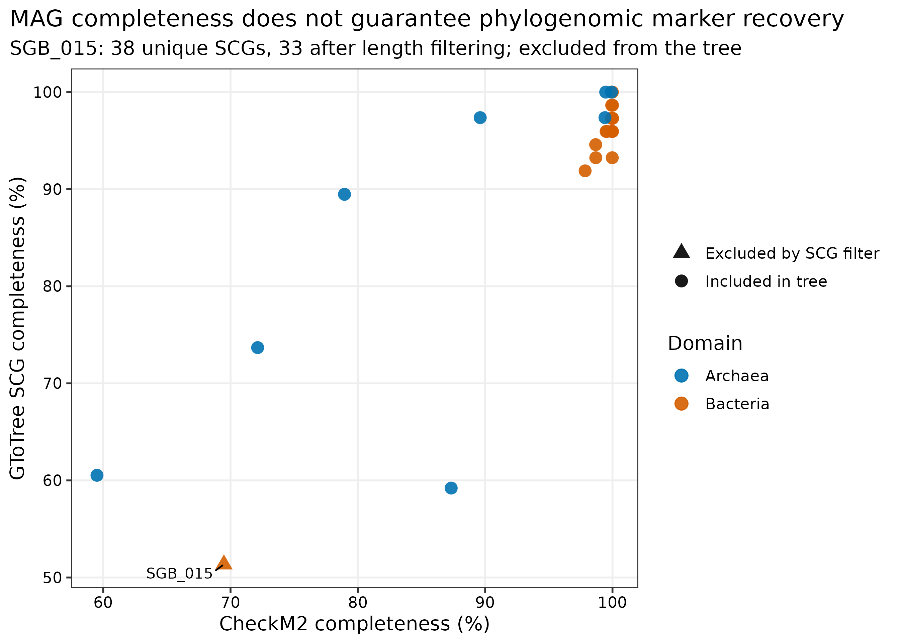

options(timeout = 600)
base_url <- "https://raw.githubusercontent.com/petemeng/metagenomics-best-practices/e219a2cd01609cc208a89e291cbd363ed7f2fbd8/"
files <- read.delim(paste0(base_url, "examples/47/files.tsv"))
for (i in seq_len(nrow(files))) {
path <- files$path[i]
dir.create(dirname(path), recursive = TRUE, showWarnings = FALSE)
if (!file.exists(path)) {
download.file(paste0(base_url, files$source[i]), path, mode = "wb")
}
}新物种与系统基因组：novel MAG、GToTree 与 IQ-TREE
先给结论：系统基因组树能回答 MAG 与参考基因组的进化位置，却不能单独宣布新物种。对 PRJEB52977 真实 mock metagenomes 得到的 24 SGBs 逐一审计后，24/24 都有 GTDB species assignment，FastANI 均越过各自 reference-specific species radius，alignment fraction 均超过 82.4%，因此本数据支持 0 novel species。GToTree 最终让 23/24 MAGs 入树；
SGB_015因 single-copy gene recovery 不足被排除，但其 ANI/AF 仍支持已有物种归属。
重要算力与数据门槛
本次实跑使用 24 CPU cores。Bacteria 的 GToTree 与 IQ-TREE 分别耗时 190.03 秒和 2,382.92 秒，Archaea 分别为 112.99 秒和 747.71 秒；四步顺序运行约 57 分钟。峰值 RAM 仅 0.313 GiB，完整工作目录约 94 MB。考虑并行峰值、参考基因组下载与临时文件，建议为这个 24-MAG 示例准备 8 GB RAM、24 cores、5 GB 磁盘、1–2 小时。数百至数千 MAG 的 ModelFinder 和 bootstrap 会显著增时；没有服务器时，可读取 data/small/47-novel-mag-phylogenomics-frozen/ 中的 alignment、tree 和审计表重画图。
提示先确定这一点
把基因组质量、相似性边界与系统发育支持合起来判断；树上独立成枝不自动等于新物种。
一条新分支，是否足以支持新物种？
系统基因组研究常以“query genomes + type/reference genomes”的 marker-gene tree 展示候选谱系，再用 ANI、参考覆盖、基因组质量和命名学证据完成物种界定。这里复现这种证据布局：先用 GTDB release R232 给出的 closest FastANI references 建立保守候选集，再用 GToTree 的 domain-specific single-copy genes 生成 protein alignment (Lee 2019年)，最后以 IQ-TREE 做模型选择、最大似然建树与双重 branch support (Minh 等 2020年; Hoang 等 2018年)。


下载本例数据与分析代码
数据与代码清单列出了本例的输入表、分析脚本和环境文件（约 0.9 MiB）。本清单不含原始 FASTQ 或大型数据库；是否需要它们取决于下文的分析起点。清单中的已计算结果仅供核对；读取结果表不等于重新运行统计模型或上游工具。
在新建文件夹中运行下面的 R 代码，下载完成后即可按正文中的相对路径读取文件。需要核验文件版本时，可使用带完整性检查的下载脚本。
先确认系统环境与版本来源
数据从哪里来
| 输入 | 本次固定对象 | 来源与审计方式 |
|---|---|---|
| Query MAGs | PRJEB52977 两个公开 uneven mock metagenomes；dRep 95% ANI 后的 24 个 SGB representatives | Article 45 冻结 representatives；解压后 sequence SHA-256 必须与 cluster ledger 一致 (Olm 等 2017年) |
| Quality | CheckM2 completeness/contamination 与 Article 44/45 质控记录 | 只用于 novelty eligibility 和图表，不修改 GTDB species assignment |
| Taxonomy/ANI | GTDB-Tk 2.7.2，GTDB release R232；24 个 species assignments、FastANI reference/radius/AF | Article 46 冻结包先通过全目录 SHA-256，再读取表格 (Chaumeil 等 2022年) |
| References | 每个 SGB 的 GTDB FastANI reference；无 FastANI hit 时才回退到 placement reference | 24 个唯一、带 accession version 的 NCBI accessions |
| Phylogeny | Bacteria 16 MAGs、Archaea 8 MAGs 分域输入 | known mock identity 不参与 novelty 判定或参考基因组选择 |
准备脚本会先验证 Article 45/46 冻结包的全部 SHA-256，再解压 representatives，并把 RS_/GB_ 前缀转换成 NCBI accession，同时拒绝没有 .version 的可变 accession。GToTree 才按 accession 从 NCBI 获取 reference genomes；下载日志和 accession ledger 都保留。
安装环境与内联作图函数
conda env create -f env/phylogeny.yml
conda list -n metagenome-phylogeny-2026.07 --explicit \
> env/phylogeny-linux-64.lock
conda run -n metagenome-phylogeny-2026.07 GToTree -v
conda run -n metagenome-phylogeny-2026.07 iqtree3 --version
conda run -n metagenome-phylogeny-2026.07 hmmsearch -h | head实跑环境锁定 GToTree 1.8.17、IQ-TREE 3.1.3、HMMER 3.4、MUSCLE 5.1、trimAl 1.5.rev1 与 Prodigal 2.6.3。
install.packages(c("ape", "ggplot2", "dplyr", "readr", "ggrepel", "scales"))
if (!requireNamespace("BiocManager", quietly = TRUE)) install.packages("BiocManager")
BiocManager::install("ggtree", ask = FALSE, update = FALSE)
library(ape)
library(ggtree)
library(ggplot2)
library(dplyr)
library(readr)
library(ggrepel)
library(scales)
set.seed(20260747)
pal_pub <- c(
"Bacteria" = "#D55E00", "Archaea" = "#0072B2",
"Query MAG" = "#D55E00", "Reference genome" = "#666666",
"Quality eligible" = "#009E73", "Below quality gate" = "#E69F00"
)
scale_color_pub <- function(...) scale_color_manual(values = pal_pub, ...)
scale_fill_pub <- function(...) scale_fill_manual(values = pal_pub, ...)
theme_pub <- function(base_size = 12) {
theme_bw(base_size = base_size) + theme(
panel.grid.minor = element_blank(),
panel.grid.major = element_line(color = "#EEEEEE"),
axis.text = element_text(color = "black"),
legend.key = element_blank(),
strip.background = element_rect(fill = "#EEF3F5", color = NA),
plot.title.position = "plot"
)
}
save_pub <- function(plot, file_base, width = 195, height = 145,
units = "mm", dpi = 350) {
dir.create(dirname(file_base), recursive = TRUE, showWarnings = FALSE)
ggsave(paste0(file_base, ".pdf"), plot, width = width, height = height,
units = units, device = cairo_pdf)
ggsave(paste0(file_base, ".png"), plot, width = width, height = height,
units = units, dpi = dpi, bg = "white")
ggsave(paste0(file_base, ".tiff"), plot, width = width, height = height,
units = units, dpi = dpi, compression = "lzw", bg = "white")
invisible(plot)
}重建输入与 novelty pre-tree audit
先问“是否已有 species assignment”
GTDB 用规范化分类框架和 reference-specific ANI radii 界定 species clusters (Parks 等 2022年)。若 query 已在足够 alignment fraction 下超过相应 reference radius，最保守解释是“属于已有 species cluster”；不能因为它来自 metagenome、没有培养，或树枝看起来较长，就改称 novel species。
ANI 必须和 alignment fraction 同时出现
令 query 与 reference 的 ANI 为 \(A\)，该 reference 的 GTDB species radius 为 \(R\)，则本篇画出的 margin 是
[ _{ANI}=A-R. ]
\(\Delta_{ANI}>0\) 只有在足够大的 alignment fraction（AF）下才有意义。局部保守区的高 ANI 不能代表整套基因组；反过来，低质量 MAG 的低 ANI 也可能由缺失、污染或错分箱造成。
Tree placement 需要正确 marker universe 与参考采样
Bacteria 与 Archaea 使用不同的 conserved single-copy gene HMM sets，不能塞进一套 alignment。每个 query 至少加入 closest GTDB reference；真正的 novelty review 还要扩充同 genus/nearby clade 的 type material、近邻 MAGs 和不同数据库代表，检查候选位置是否随 reference sampling 改变。
高 bootstrap 为什么仍不能证明新物种？
Bootstrap 衡量的是给定 alignment、模型和 taxon sampling 下某个 split 的稳定性，不检验命名学边界。一个 query 与 reference 形成 100% support 的 sister pair，既可能属于同一 species，也可能跨 species；需要 ANI/AF、物种半径、基因组质量、参考覆盖与系统分类共同解释。遗漏真正最近的 reference 时，错误位置同样可能得到很高支持。
ROOT="$PWD"
WORK="results/47-phylogenomics"
python3 scripts/prepare_article47_phylogenomics.py \
--project-root "${ROOT}" --work-dir "${WORK}"
head "${WORK}/genome-ledger.tsv"
head "${WORK}/reference-request-ledger.tsv"
head "${WORK}/novelty-pretree-audit.tsv"novelty-pretree-audit.tsv 为每个 SGB 并列记录 GTDB taxonomy、closest reference、FastANI、species radius、AF、completeness、contamination 与 candidate decision。24 个 SGB 的 ANI margin 最低仍为 2.21 percentage points，AF 最低为 82.4%；全部已有 species assignment，所以 pre-tree candidates 为 0。

SGB_015 表示它后来没有进入 SCG tree，而非 novel-species candidate。
先忠实保留“没有新物种”的结果
24/24 SGBs 已有 GTDB species fields，且 ANI/AF 支持这些 assignments；因此最终 NovelSpeciesClaim 与 CandidatusNameProposed 全为 false。树中若出现较长 terminal branch，也不能覆盖 ANI/AF 证据。负结果能防止在 supplement 中把“新组装出来的 genome”误写成“新 species”。
从一个固定 95% ANI 升级为 reference-specific radius
GTDB species radii 并不都等于 95%。本次逐 SGB 使用 R232 表中的 reference-specific radius，再联合 AF；图上 y 轴画的是 ANI minus radius，而非只画一条通用 95% 横线。数据库 release 一旦变化，closest reference、radius 和 species assignment 都应重算。
注意只报 ANI，不报 AF 和 reference accession version
局部匹配可制造高 ANI；无版本 accession 会随数据库更新漂移。ANI、AF、reference、radius、GTDB release 必须同行报告。
Bacteria 和 Archaea 分开运行 GToTree
conda run -n metagenome-phylogeny-2026.07 \
GToTree \
-f "${WORK}/inputs/trees/bacteria-query-fastas.txt" \
-a "${WORK}/inputs/trees/bacteria-reference-accessions.txt" \
-H Bacteria \
-m "${WORK}/inputs/trees/bacteria-labels.tsv" \
-o "${WORK}/gtotree/bacteria" \
-F -N -k -d -P -n 4 -M 4 -j 4
conda run -n metagenome-phylogeny-2026.07 \
GToTree \
-f "${WORK}/inputs/trees/archaea-query-fastas.txt" \
-a "${WORK}/inputs/trees/archaea-reference-accessions.txt" \
-H Archaea \
-m "${WORK}/inputs/trees/archaea-labels.tsv" \
-o "${WORK}/gtotree/archaea" \
-F -N -k -d -P -n 4 -M 4 -j 4GToTree 完成 reference retrieval、gene calling、HMMER SCG search、单 marker alignment、trimming 和 concatenation (Lee 2019年)。Bacteria 输入 16 个 MAGs，其中 SGB_015 仅找到 38 个 unique SCGs、长度过滤后 33 个，SCG completeness 为 51.35%，未进入 final alignment；其余 15 个 MAGs 与 16 个 references 形成 31-tip、10,733-aa alignment。8 个 archaeal MAGs 全部保留，与 8 个 references 形成 16-tip、14,804-aa alignment。

SGB_015 是唯一被 GToTree final-tree filter 排除的 query。
从 MAG completeness 升级为 marker recovery audit
SGB_015 的 CheckM2 completeness 为 69.48%，GToTree SCG completeness 为 51.35%；它有稳定 species-level ANI（99.91%，AF 98.3%），却不足以进入当前 marker tree。系统发育缺席表示 tree evidence 不可用，不表示它是 novel，也不能在图上把它偷偷删掉而不解释。
注意把 Bacteria 与 Archaea 放进同一 marker alignment
两域的 conserved marker sets 和进化尺度不同。分域 search、alignment、model selection 和 tree inference，再在正文并列解释。
注意忽略被 marker filter 排除的 MAG
只展示 final tree 会让读者误以为输入从来只有 23 个。应给 input-to-tree flow，列出 excluded ID、SCG hits、length-filtered hits 和质量指标。
ModelFinder、maximum likelihood 与双重支持度
conda run -n metagenome-phylogeny-2026.07 \
iqtree3 \
-s "${WORK}/gtotree/bacteria/Aligned_SCGs_mod_names.faa" \
-st AA -m MFP -B 1000 --alrt 1000 \
-T AUTO --threads-max 24 \
--seed 20260747 --safe \
--prefix "${WORK}/iqtree/bacteria/article47-bacteria"
conda run -n metagenome-phylogeny-2026.07 \
iqtree3 \
-s "${WORK}/gtotree/archaea/Aligned_SCGs_mod_names.faa" \
-st AA -m MFP -B 1000 --alrt 1000 \
-T AUTO --threads-max 24 \
--seed 20260748 --safe \
--prefix "${WORK}/iqtree/archaea/article47-archaea"ModelFinder 为 Bacteria 选择 LG+I+R4，为 Archaea 选择 LG+F+I+R3。Bacteria 的 28 个有双重标签的内部枝中，median UFBoot 为 100，89.3% 达到 UFBoot >=95；96.4% 达到 SH-aLRT >=80。Archaea 的 13 个内部枝 median UFBoot 为 100，UFBoot >=95 与 SH-aLRT >=80 的比例均为 100%。种子按 domain 分开固定，避免两个独立随机过程共用一个含糊记录。
注意把 UFBoot=100 当成物种边界
Support 评价 split stability，不定义 species。缺 reference、错误 marker、污染或系统误差都可能得到很高 support。
汇总、作图、保存与结果核对
MAG 质量决定“能否提出候选”，不是物种身份
这里把 completeness >=90% 且 contamination <5% 作为进入高质量 novelty review 的最低 gate；17/24 MAGs 满足，7/24 不满足。低于质量 gate 不等于新物种，只表示证据不足以承担正式的 novel-taxon claim。MIMAG 质量、GUNC chimerism、rRNA/tRNA、assembly graph 和人工校正仍需独立报告 (Bowers 等 2017年)。
python3 scripts/run_article47_phylogenomics.py \
--project-root "${ROOT}" --work-dir "${WORK}" \
--environment metagenome-phylogeny-2026.07 --threads 24
python3 scripts/summarize_article47_phylogenomics.py \
--project-root "${ROOT}" --work-dir "${WORK}"
Rscript scripts/plot_article47_phylogenomics.R \
--work-dir "${WORK}" --output-dir figures
python3 scripts/freeze_article47_phylogenomics.py \
--project-root "${ROOT}" --work-dir "${WORK}" \
--output-dir data/small/47-novel-mag-phylogenomics-frozen
python3 scripts/validate_article47_phylogenomics.py \
--project-root "${ROOT}" \
--frozen-dir data/small/47-novel-mag-phylogenomics-frozen \
--output-dir results/47-phylogenomics-validation \
--figure-dir figures \
--chapter chapters/47-novel-mag-phylogenomics.qmd冻结包保留两域的 concatenated protein alignments、IQ-TREE trees/reports/logs、GToTree genome/SCG summaries、versioned reference ledger、novelty decision table、commands、software versions、GNU-time 资源记录及全部 SHA-256；58 MB query FASTAs 和下载后的临时 reference files 留在计算目录。
从“高支持树”升级为 sampling sensitivity
两棵树的多数分支支持度很高，但每个 SGB 只加入一个 closest reference，适合验证局部配对，不足以完成正式新物种描述。若真的出现 unassigned high-quality candidate，应扩充同 genus/type strain/reference MAG sampling，测试 marker occupancy、trim settings、模型、recombination 与 alternative rooting；只有结论对这些选择稳健，树才承担 taxonomic evidence。
注意把新 MAG 写成新 species
“首次从自己的样本组装出来”只描述数据集，不是 taxonomy。先查 GTDB species assignment、reference radius、AF 和更广泛参考库。
注意自动生成 Candidatus 名称
新名称涉及命名规范、现有名称查重、生态与表型描述、type material 或序列型材料要求，以及人工分类学审阅。流程只生成 candidate ledger，不自动命名或提交。
同时报告相似性与系统发育支持
Methods template
Twenty-four species-level genome-bin representatives dereplicated at 95% ANI from public PRJEB52977 metagenomes were checksum-linked to their GTDB-Tk v2.7.2 classifications against GTDB release R232. The GTDB FastANI reference was selected for each SGB; the closest placement reference was used only when no FastANI reference was available. All 24 selected NCBI accessions were unique and versioned, and known mock composition was not used for novelty assessment or reference selection. Species novelty was screened using the GTDB species field, reference-specific ANI radius, FastANI alignment fraction, CheckM2 completeness and contamination, and phylogenomic placement; no name or novelty claim was generated automatically. Bacterial and archaeal genomes were analyzed separately with GToTree v1.8.17 using the Bacteria and Archaea single-copy-gene HMM sets, respectively, with HMMER v3.4, Prodigal v2.6.3, MUSCLE v5.1 and trimAl v1.5.rev1. Concatenated amino-acid alignments were analyzed with IQ-TREE v3.1.3 using ModelFinder (
-m MFP), 1,000 ultrafast bootstrap replicates (-B 1000), 1,000 SH-aLRT replicates (--alrt 1000), automatic thread selection capped at 24 cores, and safe numerical mode. Random seeds were 20260747 for Bacteria and 20260748 for Archaea. Input/output checksums, accession versions, marker-recovery tables, commands, versions and GNU-time resource records were retained.
Results template
All 24 SGBs had species-level GTDB assignments and exceeded their reference-specific ANI radii with FastANI alignment fractions of 82.4%–100%; no pre-tree novel-species candidate or final novel-species claim was supported. Seventeen MAGs met the prespecified >=90% completeness and <5% contamination gate for potential novelty review. GToTree retained 15 of 16 bacterial MAGs and all eight archaeal MAGs. SGB_015 was excluded after recovering 38 unique SCGs and 33 length-filtered SCGs (51.35% SCG completeness), although its existing species assignment remained supported by 99.91% ANI and 98.3% alignment fraction. The bacterial alignment comprised 31 tips and 10,733 amino-acid sites; ModelFinder selected LG+I+R4, and 89.3% of supported internal branches had UFBoot >=95. The archaeal alignment comprised 16 tips and 14,804 sites; ModelFinder selected LG+F+I+R3, and all supported internal branches had UFBoot >=95. These trees were interpreted as placement evidence under the sampled references, not as stand-alone species delimitations.
换到自己的研究中，先检查哪些条件？
- 从通过 CheckM2、GUNC、MIMAG 与人工 assembly-graph 审查的 nonredundant representatives 起步；保留每个 FASTA 的 SHA-256。
- 用锁定 release 的 GTDB-Tk 导出 species assignment、closest reference、ANI radius、ANI 和 AF；不要只复制 taxonomy string。
- 把 unassigned、未越过 radius/AF 且质量足够的 MAG 标为 candidate，不直接写 novel species。
- 为每个 candidate 扩充同 genus、同 family、type/reference genomes 和近邻 MAGs；reference accessions 必须带版本。
- Bacteria/Archaea 分域运行 SCG pipeline；保存每个 genome 的 hits、redundancy、length filtering 和 final-tree inclusion。
- 对 alignment occupancy、composition bias、long branches、recombination、模型和 trimming 做审计；固定所有 seed。
- 同时报 SH-aLRT 与 UFBoot/support，并做 reference-sampling 与 marker-threshold sensitivity；不要只截图一棵最“好看”的树。
- 只有 ANI/AF、质量、系统发育、生态证据和命名学人工审阅共同支持时，才进入
Candidatus/novel species 描述与数据库提交。
图中应该保留哪些信息？
- Bacteria 与 Archaea 分图，避免把不同 HMM marker universes 伪装成同一可比坐标。
- Query MAG 用彩色圆点，versioned references 用灰色三角；reference accession 的
.version保留在图中。 - 只标 UFBoot <95 的内部枝，减少满树“100/100”的视觉噪声；完整 SH-aLRT/UFBoot 仍保留在 native tree。
- novelty plot 同时放 ANI margin、AF、MAG quality 与 tree inclusion，避免用单一阈值宣布新物种。
- 图内全部为英文；PDF 保留矢量分支和文字，PNG/TIFF 以 350 dpi 输出，TIFF 使用 LZW
compression = "lzw"。
回到最初的问题
新物种结论需要跨过 GTDB 物种边界、MAG 质量、marker recovery 与带参考树四道门；一棵树不能单独命名新物种。
参考文献
- GTDB 的 rank-normalized taxonomy 与 species clusters (Parks 等 2022年)
- GTDB-Tk v2 分类、placement 与 ANI screening (Chaumeil 等 2022年)
- GToTree domain-specific phylogenomics workflow (Lee 2019年)
- IQ-TREE model selection 与 maximum-likelihood inference (Minh 等 2020年)
- UFBoot2 branch support (Hoang 等 2018年)
- MIMAG genome-quality reporting standard (Bowers 等 2017年)